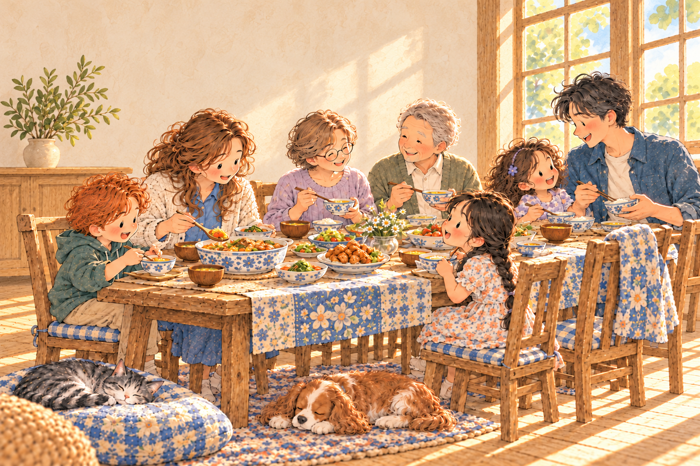

미리보기 · 이 화면에서 본 영상은 시청 기록에 포함하지 않아요.
뭐 볼까요?
한 끼에 약 60~90분 · 안 본 영상 우선 · 본 영상도 보관 · 원본은 끝까지

도움말 / Help
채널을 누르면 바로 재생합니다.
영상과 음악의 소리를 각각 조절할 수 있어요.
미리보기 · 이 화면에서 본 영상은 시청 기록에 포함하지 않아요.
한 끼에 약 60~90분 · 안 본 영상 우선 · 본 영상도 보관 · 원본은 끝까지

채널을 누르면 바로 재생합니다.
영상과 음악의 소리를 각각 조절할 수 있어요.